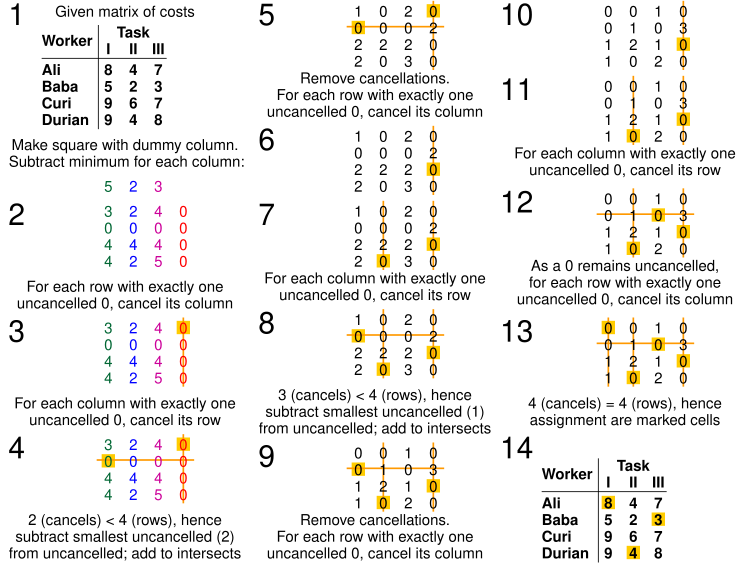

Assignment Problem
Category: Optimization, Matching, Hungarian Algorithm
Description: Assign n agents to n tasks so each task is done by exactly one agent and the total cost is minimised. A classic solution is the Hungarian algorithm running in O(n³).
📦Business Case (Amazon):
- Warehouse robots ↔ picking routes
- Parcels ↔ delivery vans
- Support tickets ↔ agents
- Drones ↔ delivery coordinates
- Ads ↔ on‑page slots
- Compute jobs ↔ AWS instances
- Packages ↔ last‑mile hubs
🧠 How It Works?
- Model as a bipartite graph: agents on one side, tasks on the other, edges weighted by cost.
- Hungarian algorithm subtracts row/column minima, covers zeros, adjusts the matrix until an optimal zero‑covering matching is found.
- Result is a minimum‑cost one‑to‑one assignment.
📊 Visualisation

Demonstration of Assignment Problem
👩💻 View Code
GitHub – Hungarian Algorithm
🧮 Complexity Analysis
- Time: O(n³)
- Space: O(n²)
- Optimality: Guarantees global minimum cost for square matrices with non‑negative weights.